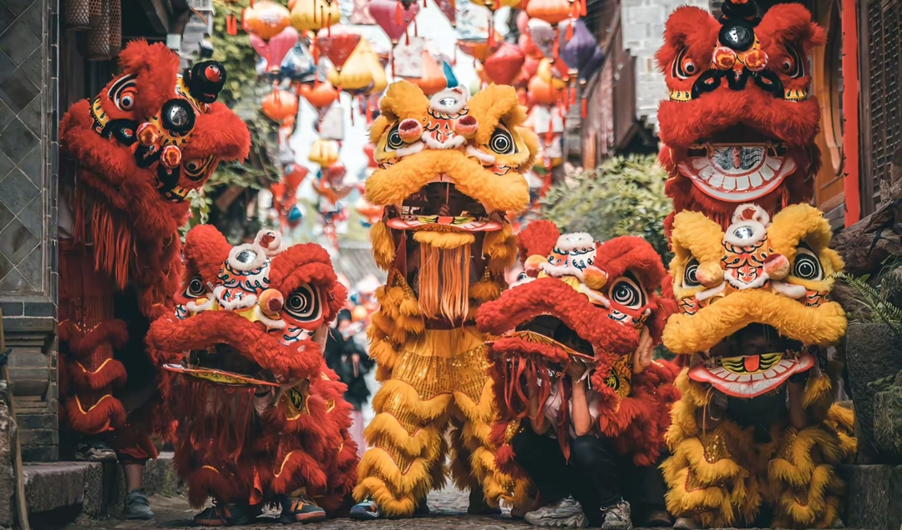
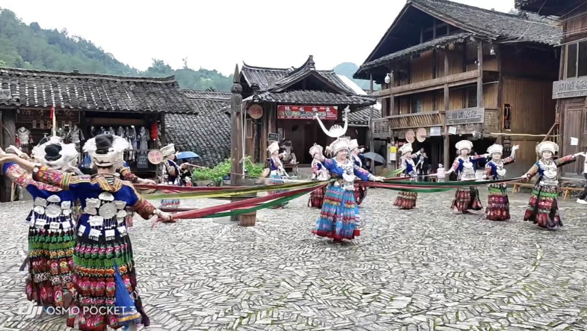
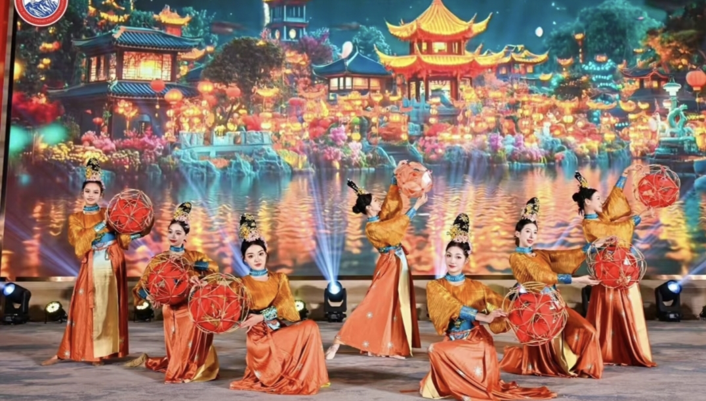
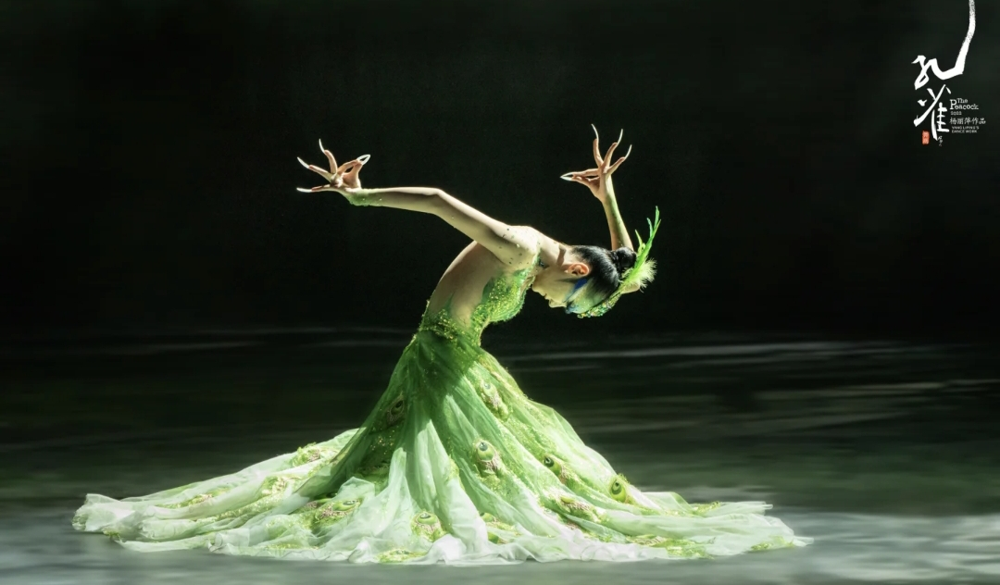
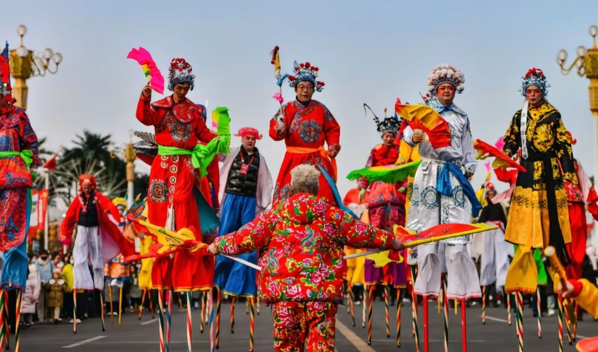
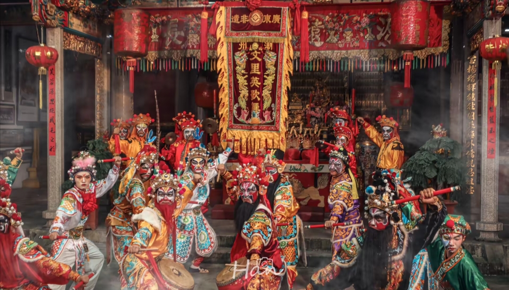
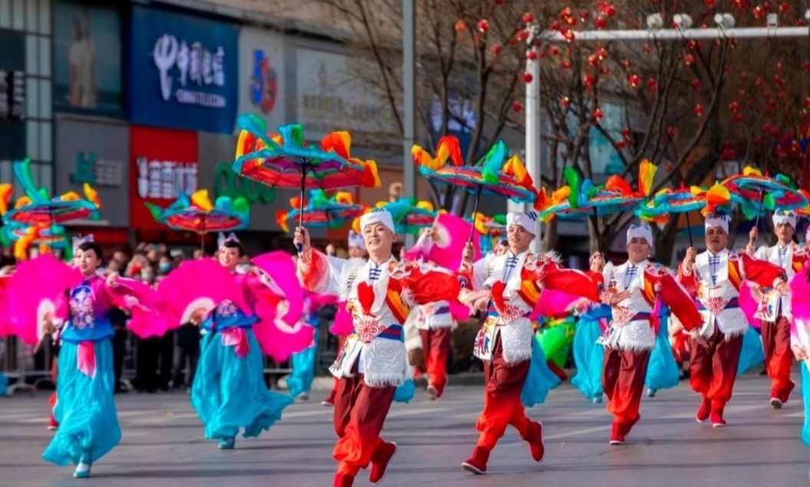

| 非遗传统舞蹈介绍 | ||||||||
|
| 非遗舞蹈：千年文明的艺术瑰宝 非遗舞蹈是千年文明孕育的艺术瑰宝，既沉淀着历史的厚重，又涌动着鲜活的生命力。其中，傩戏与舞狮尤为夺目，值得细细品读。 傩戏素有“人类文明活化石”之称，舞者戴特色面具、着绚丽戏服，随铿锵鼓点起舞，或演绎神佛传说传递先民敬畏，或再现生活场景尽显诙谐，每一步都藏着古老的祈福智慧。 舞狮则是深入人心的吉祥符号，锣鼓声中，雄狮昂首腾跃，眨眼、摆尾、登高间，既展力量与勇气，又寄寓对美好生活的向往，每逢庆典总能点燃热闹氛围。 读懂这两项舞蹈的魅力，便能触摸非遗舞蹈的文化密码。愿更多人爱上它们、传承它们，让非遗舞蹈在新时代永续光芒。 |
|
 |
傩戏 |
狮舞 |
| 其他传统舞蹈欣赏 |
|  |  |  |
苗族锦鸡舞 |
滚灯 |
傣族孔雀舞 |
|  |  |  |
高跷 |
潮汕英歌舞 |
秧歌 |